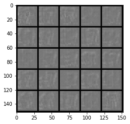
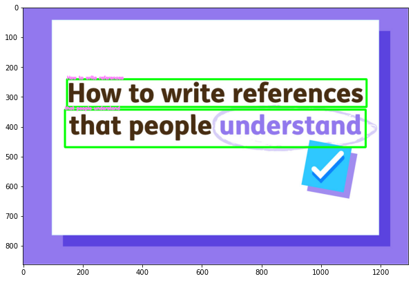

Controllable GAN
Trained on the CelebA dataset to generate new faces, then steered generation toward specific attributes.
- Control features like smiling, beard and bald head
- Attribute control by moving through the latent space
Deep learning practitioner working on generative adversarial networks
From GANs that dream up faces to NeRFs that rebuild 3D scenes — here's what I've been building.
Generative modelling, vision, 3D and language.
Trained on the CelebA dataset to generate new faces, then steered generation toward specific attributes.

 epoch 1epoch 85
epoch 1epoch 85
Stabilising GAN training by replacing WGAN's weight clipping with a penalty on the critic's gradient norm.

A deep convolutional GAN trained in TensorFlow to generate handwritten MNIST digits.
Generates a specific MNIST digit on demand by conditioning the generator on a class label.
Reconstructed a 3D scene of a JBL speaker from photos using a Neural Radiance Field.

Extracted text from images with EasyOCR (PyTorch) and rendered the detections back onto the image.
Classified tweets as positive, negative or neutral with a full NLP preprocessing pipeline.
A CNN trained on MNIST, exported to TensorFlow.js and running entirely in your browser.
My MNIST classifier runs live in your browser with TensorFlow.js. Sketch any number from 0–9 and hit predict — works on desktop and mobile.
Launch the demoDCGAN, WGAN-GP, conditional and controllable GANs.
Image classification, OCR and neural 3D reconstruction.
Text scraping, cleaning, lemmatization and sentiment classification.
Training in Python, deploying straight to the browser.
Interested in collaborating, or want to chat about generative models and computer vision? Find me on GitHub.